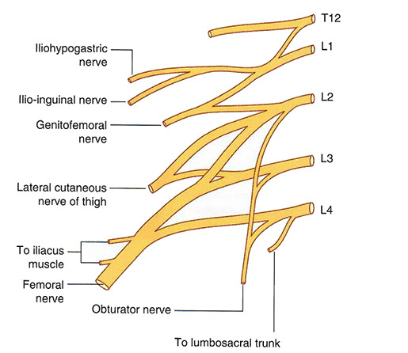

Lab 5 - Module 3 - Hip and Anterior Thigh - Lumbosacral Plexus and Nerves of the Thigh: Page 1 of 2
×

READINGS:Gray's Anatomy for Students (Fourth Edition): Pages: 398-401, 418-422, 433-437, 481-486, 546-548 |
Lumbar Plexus:
| The Lumbar Plexus is the upper portion of the lumbosacral plexus. It is formed by the ventral rami of L1, L2, L3, L4. Nerves of the lumbar plexus only run as far as the knee except for a cutaneous branch which runs to the foot. Each of the L1-L4 nerve roots splits to form an anterior and posterior division. The branches of the lumbosacral plexus are like those of the brachial plexus. They receive contribution from either the anterior or posterior divisions depending on what structures they supply. |
|  |
| Tap on image to enlarge |